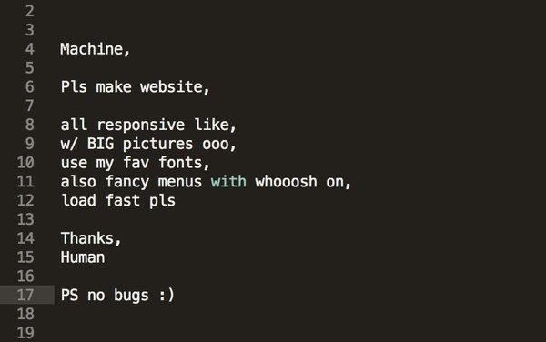
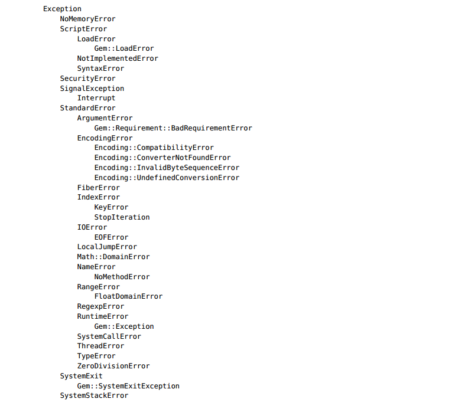

Metaprogramming
with Ruby
Quick lecture overview
- Blocks, Procs, Lambdas
- Metaprogramming
- method_missing, define_method
- Handling/Raising the Exceptions
Blocks
{ puts 'Hello' }
do
puts 'Hello'
end
Calling inside method
def call_block
puts 'Beginning'
yield
puts 'End'
end
call_block { puts 'In the block' }
Calling a block with parameters
def who_says_what
yield('Dave, 'hello')
yield('Andy, 'goodbye')
end
who_says_what { |person, phrase| puts "#{person} says #{phrase}" }
Passing block by reference
def some_method(&block)
yield if block_given?
end
some_method { puts 'Hello' }
some_method
Proc & Lambda Objects
Blocks are not objects, but they can be converted into objects of class Proc. There are four ways of converting a block into a Proc object.
def method_with_block(p1, p2, &block)
puts block.inspect
end
method_with_block(1,2) { 'a block' } => #Proc:0x007ff4a4663621@prog.rb:1
block = Proc.new { 'block' } => #Proc:0x007fd4a4064638@prog.rb:1
block = lambda { 'a block' } => #Proc:0x007f9d4c12c5c8@prog.rb:1 (lambda)
lam = ->(p1, p2) { p1 + p2 }
lam.call(4, 3) # => 7
Proc/Lambda Difference
- Lambdas are stricter when checking the parameters passed to them;
- Return in a lambda exits much as it would from a method.
def proc_method
p = Proc.new { return 99 }
p.call
puts 'Never get here'
end
proc_method # => 99
def lambda_method
p = lambda { return 99 }
res = p.call
puts "The block returned #{res}"
end
lambda_method # => "The block returned 99"
Metaprogramming
Metaprogramming — writing code that writes code. Most advanced Ruby programmers will use metaprogramming techniques to simplify their code.
Singletons
Singletons - methods that are specific to a particular object.
animal = "cat"
def animal.speak
puts "The #{self} says miaow"
end
animal.speak
Inheritance and Visibility
class Base
def a_method
puts "Got here"
end
private :a_method
end
class Derived1 < Base; end
class Derived2 < Base
public :a_method
end
Calling methods dinamically
class Printer
def print_a
puts 'a'
end
private
def print_b
puts 'b'
end
end
Printer.new.print_a => #a
Printer.new.print_b => #NoMethodError: private method 'print_b' called
Printer.new.send(:print_a) => #a
Printer.new.send(:print_b) => #b
Exceptions
Hierarchy
Creating own Exceptions
class MyCustomError < RuntimeError; end
Handling Exceptions
Rescues clause
begin
#some code that may raise an exception
rescue SyntaxError, NameError => boom
print "String doesn't compile: " + boom
rescue StandardError => bang
print "Error running script: " + bang
end
Ensure clause
f = File.open("testfile")
begin
# .. process
rescue
# .. handle error
ensure
f.close
end
Raising Exceptions
raise => #RuntimeError Exception will be triggered
raise 'bad mp3 encoding'
raise InterfaceException, 'Keyboard failure', caller
Catch & Throw
word_list = File.open("wordlist")
catch (:done) do
result = []
while line = word_list.gets
word = line.chomp
throw :done unless word =~ /^\w+$/
result << word
end
puts result.reverse
end

No questions? No answers!
Created by Vasyl Lasiak / @vlasiak